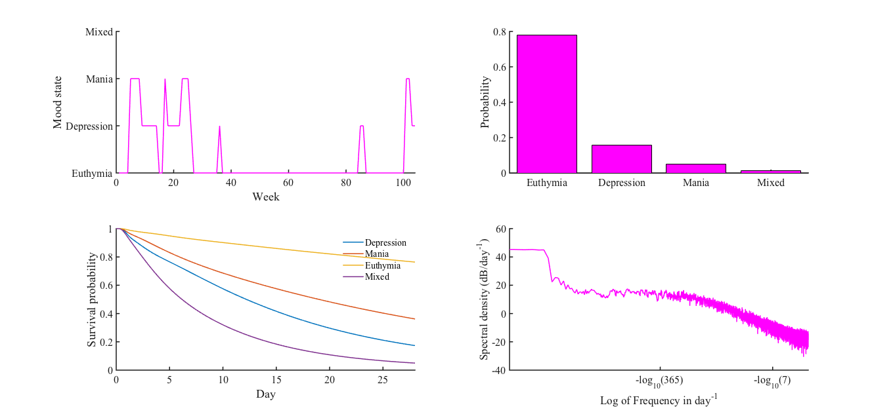
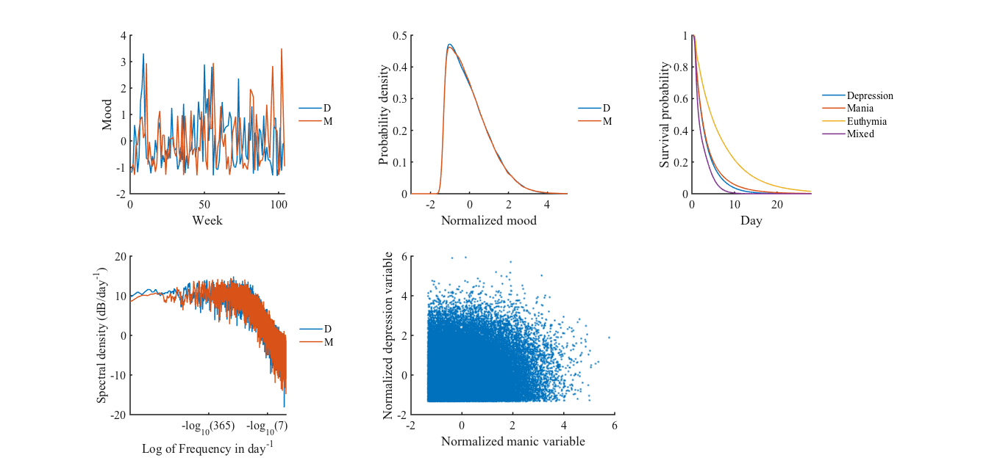

The matlab code for the book chapter: Cochran AL, Schultz A, McInnis MG, Forger DB (2017) A Comparison of Mathematical Models of Mood in Bipolar Disorder (Chapter 12) Computational Neurology and Psychiatry, Springer Series in Bio-/Neuroinformat., Eds. Érdi P, et al. 6:315-341 http://dx.doi.org/10.1007/978-3-319-49959-8_11 Is available from Amy L. Cochran's web site: https://sites.google.com/site/amylouisecochran/code under the link "Comparison of Models of Mood in Bipolar Disorder". In (Cochran et al. 2017) 6 previously published models and 2 models that are presented for the first time of bipolar disorder are compared. Instructions to run the model are provided in ComparisonMoodinBP/ReadMe.txt The model generates the figures in the chapter, for example matlab "Figure 1 Lopez's DTMC"  contains subplots for paper Fig. 2, 3, 4 (second column bottom panels). Matlab "Figure 2 Absolute value of 2D OU"  contains subplots for paper Fig. 2, 3, 4 (first column bottom panels).